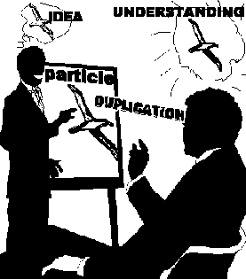
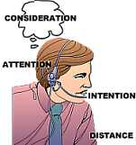

|
|
The
Communication Formula |
|
|
The
Communication Formula |

The simplest statement of the communication formula is:
Cause - distance - effect.
There is somebody who speaks (cause).
The somebody speaks to a second person over there (distance).
This second person listens (effect).
It is also defined as: the interchange of ideas across space.
Another definition is: communication is the action by
which one experiences emotion (A) and by which one obtains agreement (R).
This definition expresses the function of Communication in the ARC triangle.
 |
A Consideration is simply a |
Yet another definition says: the first and most basic definition of any part of communication is it's a consideration. As 'duplication' is a consideration, communication is possible to the degree that the individual can freely make considerations.
The last definition quoted here implies that 'duplication' is the purpose behind any communication. As 'Cause' you want to make yourself understood or your orders followed. As 'Effect' you want to understand or know what to do. What arrives at Effect is the 'Duplication'.
|
Duplication - Idea at Cause |
|||
| Compliance |
Physical Copy |
||
It also says you are as good at communication as you can
make considerations. This may be a little broad for practical use. But it covers
all the small component parts of communication - as well as the very important
factors of making up something to communicate (idea, message), and the ability
of the receiver to duplicate that.
 |
Only live communication (Use the illustrations to |
From Axiom 28 we have: The formula of Communication is: Cause, Distance, Effect, with Intention and Attention, and Duplication with understanding.
Here 'Intention' and 'Attention' are mentioned. In a live
communication the 'Cause' must have Intention for the communication to be
successful. The Cause must pay Attention to the receipt-points location and
condition. 'Attention' is of course also part of being a good listener, capable
of receiving a communication. The action of communicating has to result in
Understanding. The 'Understanding' part is unique to a live
communication.
The full definition of communication is contained in Axiom
28:
"Communication is the consideration and action of impelling an impulse or particle from source-point across a distance to receipt-point, with the intention of bringing into being at the receipt-point a duplication and understanding of that which emanated from the source-point."
 |
Components of |
"The formula of Communication is: Cause, Distance, Effect, with Intention and Attention and Duplication with Understanding."
"The component parts of Communication are:
Consideration, Intention, Attention, Cause, Source-point, Distance, Effect, Receipt-point, Duplication, Understanding, the Velocity of the impulse or particle, Nothingness or Somethingness. A non-communication consists of Barriers. Barriers consist of Space, Interposition's (such as walls and screens of fast- moving particles), and Time.""A communication, by definition, does not need to be two-way. When a communication is returned, the formula is repeated, with the receipt-point now becoming a source-point and the former source-point now becoming a receipt-point."
There is a lot of data here. Let us break it down and look at the different parts.
We have the main definition:
"Communication is the consideration and action of impelling an impulse
or particle from source-point across a distance to receipt-point, with the
intention of bringing into being at the receipt-point a duplication and
understanding of that which emanated from the source-point."
Here 'Cause' is called 'Source-point'. That is of course where the communication starts.
'Effect' is called 'Receipt-point'; that is where the communication is supposed to arrive.
Source-point has 'the Intention'.
'R. Hubbard defines Intention as 'the carrier wave, that
takes the words along with it.'
Intention is a command factor, a consideration of causatively wanting something
to happen so it happens. It is not the words (or particles).
Intention is in other words a theta quality or ability.
|
Intention as: a consideration of |
The receipt-point has to have 'Duplication and Understanding'.
'Duplication' can be a mechanical action. A copy machine
can duplicate.
'Understanding' is a theta quality or ability. It takes a live thetan and live
communication to understand.
We have a particle or impulse. It can be a letter, an e-mail, a gift, a picture, or even a blow or a bullet, or simply spoken words. When an understanding is transferred from one being to another we have a successful communication.
In case of a hostile communication (like, shooting a bullet) you may not get understanding, but you do get some kind of duplication (or effect) taking place, so it can be called a 'communication'.
Let us look at the list of 'Component Parts'
We have the physical set-up of Cause - Distance -
Effect. We have a particle. Where do all these parts fit in: Consideration,
Intention, Attention, Cause, Source-point, Distance, Effect, Receipt-point,
Duplication, Understanding, the Velocity of the impulse or particle, Nothingness
or Somethingness. A non-communication consists of Barriers. Barriers consist of
Space, Interpositions (such as walls and screens of fast-moving particles), and
Time?
We will take them one by one, define them first, and make some comments.
Consideration is: (1) a
thought, idea, a postulate about something, the message in the communication.
(2) a continuing postulate (such as 'distance', 'duplication', 'attention',
etc.). (3) The highest capability of life, senior to the mechanics of
space, energy and time.
In the comm formula we have the considerations 'Duplication', 'Intention',
'Attention'. Even 'Distance' is a consideration according to definition (3)
above. You see how the concept of Consideration pervades the subject of
Communication.
Definition (1), a thought or idea fits most closely: the idea or message the
Source-point wants to get across and considers that it gets across, and which
the receipt-point considers that it duplicates and understands.
Intention is (1) the
carrier wave that takes the words along with it. And (2) It's a command factor;
a consideration of causatively wanting something to happen so it happens. (3) It
is a theta quality or ability.
This clearly belongs to Source-point. He has an idea or thought and wants to
tell his friend. He uses intention along with the words to get it across.
'Attention' is focused interest. Attention can be aberrated by becoming unfixed and sweeping; or it can become too fixed upon something, fixation.
The Source-point has to be very aware of (meaning, have
attention out on) the Receipt-point. Source-point has to know where the
Receipt-point is and what the Receipt-point is doing with his or her attention.
Is the Receipt-point ready to receive this communication? What tone level is
best to express this message to this Receipt-point in? And so on.
'Attention' also refers to the receipt-point. He has to focus with some interest
on Source-point in order to be able to receive his communication. A good
listener would focus with high interest on Source-point and should be able to do
so at will (his interest is not too fixed nor too sweeping). [If you stare at
your pc or are too stiff when you audit your attention is on yourself; your
communication suffers, the ARC in the session suffers, and the pc suffers.]
Cause, Source-point. These
are synonyms. It is simply the starting point or the point of emanation of the
communication. According to R. Hubbard: "Cause in our dictionary here means
only "source-point."
In TRs, this is the person who speaks.
|
<Distance> |
|
|
|
For a communication to be necessary there has to be a
distance |
||
Distance, 1) The
length between two points. 2) The linear space or interval between point A and
point B.
For communication to be necessary there has to be a distance between
Source-point and Receipt-point which one or both has to overcome. If there were
no distance, communication would not be needed as the two points would occupy
the same space. They would also experience total Affinity, as Cause and Effect
would be occupying the same space. Affinity is sometimes defined as
'consideration of distance'. [In solo-TRs, where a solo auditor gives commands
to himself to execute, the affinity factor is extremely important.]
Effect, Receipt-point, These are
synonyms. It is simply the ending point of the communication.
In TRs, this is the person who listens.
Duplication, is Ideally an exact copy of the original. Also, the process
of making one or many copies. Duplication implies in normal use that it is a
mechanical process. R. Hubbard, however, is often using the word as meaning:
receiving exactly the communication that emanated from Source-point.
'Perfect Duplication' or 'Perfect Duplicate' is taken to be total ARC. The tone
scale (according to Axiom 25) is a scale of less and less duplication. According
to Axiom 20 a 'Perfect Duplicate' will cause a condition to vanish in full or in
part. Duplication is often a matter of how you transmit a reality or accomplish
agreement.
It belongs clearly to 'Receipt-point' (nonetheless, Source-point has the
responsibility of emanating a message that Receipt-point can make an
exact copy of).
Understanding, According to R. Hubbard, "Understanding is
knowingness in action.", "It is composed of affinity, reality and
communication. And, "Understanding is a sort of a total solvent, it washes
away everything."
When we say 'Understanding' we are talking about a theta quality and ability.
There is no true 'mechanical understanding'. According to the Axioms the thetan
consists of A, R and C = Understanding and is not part of MEST. Receipt-point
exercises his or her A, R, and C to achieve Understanding; we presume that
Source-point took responsibility for expressing the message in a way that helps
Receipt-point to receive it with A, R, and C and so bring about Understanding.
Velocity of the impulse or particle, Velocity means speed.
In verbal communication you can talk too fast or too slow. A speaker has to make
sure to adjust his 'Velocity of particles' to the listener. Too high a velocity
can be deadly - as a bullet is. You can bore a listener to death by giving him
too few ideas too slowly. You can overwhelm her by giving so many ideas so fast
she cant keep up. [As an auditor, you will drive your pc out of session if you
deliver the commands too slowly for her, or too fast.]
This is the responsibility of the Source-point.
|
Music is communication. |
Nothingness or Somethingness, Spoken communication consists of sounds and
pauses. A good example of 'Nothingness or Somethingness' being part of
communication would be music, with its silences. So is the transmission of Morse
code. A speaker makes statements with pauses in between, perhaps expecting a
response and perhaps not getting it. The management of Nothingness or
Somethingness in the communication is in the hands of the Source-point.
A non-communication consists of Barriers. Barriers
consist of Space, Interposition's (such as walls and screens of fast-moving
particles), and Time.
There can be too many barriers to make a
communication successful. 'Too far away'., 'Not in the same room' or 'Missed
appointments' could be examples.
The Source-point will have to bring himself into a position where these factors
don't interfere.
Part of this course is to do Axiom 28 in clay. This analysis is meant as a help to understand the words in the Axiom better and should make it easier to do the clay demo assignment.